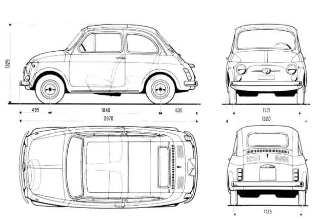
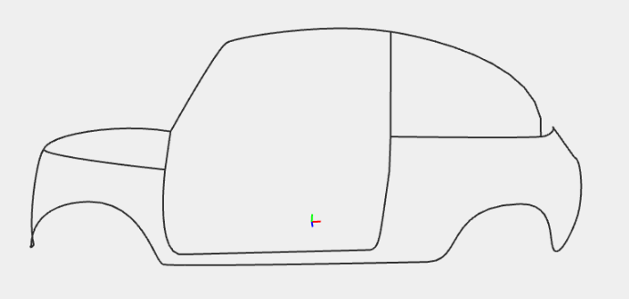
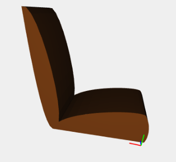
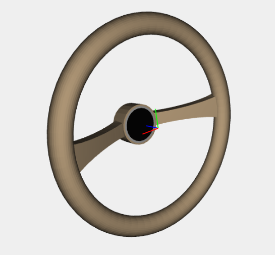
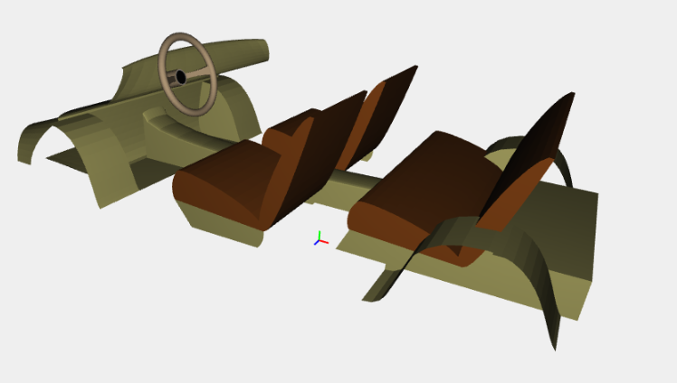
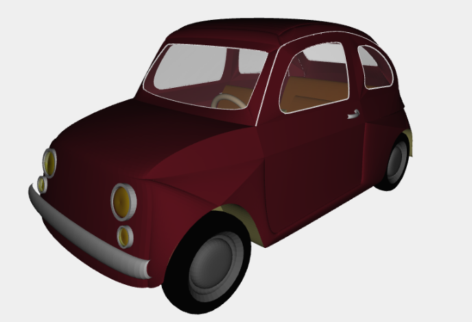

Object Description
Fiat 500 an icon of our time
Some cars go down in history for their technological or styling innovations. Others deserve to be remembered for the role they have played in the daily life of an entire generation or an entire country. Few succeed in combining the two: technology and sentiment. They leave an indelible mark, becoming a sort of icon of their age. The Nuova 500 is one of these.

In a career lasting 18 years, from 1957 to 1975, exactly 3,893,294 were built, and it helped Italians and numerous other Europeans to satisfy a need for individual mobility that began to gain momentum from the early 1950s. The Nuova 500, even more than the 600 (1955), also brought the end of the post-war emergency period for motorisation and the automotive industry in Italy, and the start of the striving for comfort, albeit minimal and economical.
The Fiat 500 measuring only 2.97 metres (9 feet 9 inches) long, and originally powered by an appropriately sized 479 cc two-cylinder, air-cooled engine, the 500 redefined the term "small car" and is considered one of the first city cars.
Project
Before starting the modeling phase I performed a study of the proportions using pen and paper. This stage has been set by the "blueprint" of Fiat 500. The purpose of this study was to select the units of appropriate measurement to accurately reproduce the contour lines of the model.
Each point of the pattern is a triple of values corresponding to the coordinates of the 3D model (x, y, z). One of the difficulties I encountered was to accurately control the three perspectives for each point, initially with regard to lines and then to the surfaces where I used the auxiliary lines to be able to close complex surfaces.

Hierarchical Decomposition
Contours
The first step of the modeling phase was performed by reproducing the contour lines of the model. I am started modeling the lines of one side and then rebuild the opposite side in a symmetrical manner. The lines of junction between the two sides are those relating to the part of the trunk, the roof and the front hood.
The lines were created by the function that models Hermite's curves. Some lines have been combined (curves_union function) to allow the modeling of surfaces as is explained later.
Surfaces
The second step was to model the surfaces of the outer parts of the model. This was the most difficult step for the realization.
The first area that I modeled were those related to the lateral area. The difficulty has been the modeling of complex surfaces composed of many contour lines. For these surfaces I used two particular functions of surface modeling in addition to traditional Hermite's surface:
- Triangolar CoonsPatch (three contour lines)
function triangolarCoonsPatch(controlPointsCurve1,controlPointsSup1,controlPointsCurve2){
var dom2DTri = TRIANGLE_DOMAIN(32, [[1,0,0],[0,1,0],[0,0,1]]);
var curve1=curveFunction(controlPointsCurve1);
var curve2=curveFunction(controlPointsSup1);
var sup1=CUBIC_HERMITE(S1)(controlPointsCurve2);
return MAP(TRIANGULAR_COONS_PATCH([curve1,sup1,curve2]))(dom2DTri);
}function coonsPatch(controlPointsCurve1,controlPointsCurve2,controlPointsSup1,controlPointsSup2){
var dom2D = PROD1x1([INTERVALS(1)(16),INTERVALS(1)(16)]);
var cP1a=CUBIC_HERMITE(S0)(controlPointsCurve1)
var cP1b=CUBIC_HERMITE(S0)(controlPointsCurve2)
var cP1c=CUBIC_HERMITE(S1)(controlPointsSup1)
var cP1d=CUBIC_HERMITE(S1)(controlPointsSup2)
return MAP(COONS_PATCH([cP1a,cP1b,cP1c,cP1d]))(dom2D);
}
Door
The doors are made using the modeling of surfaces described above. The glass of the windows and the door is a surface obtained by a ConsPatch. The transparent color is obtained by adding an attribute to the function rgb color for brightness. (rgba)

SHOW EXTERIOR DESIGN
Interns
The model of the interior was carried out through a separate process. The measures were taken in proportion using the blueprint and were later joined by the two models (internal and external).
Seats
The most interesting part of the model corresponds to the seats. I made a seat joining, via two surfaces of Hermite, the lower part and the backrest. Then I moved the front seat in the proper position. The rear seat has been obtained through a scaling of the first seat and has been positioned.
Steering Wheel
To "decorate" the inside I made the steering wheel (screen above), wheel covers, the central tunnel, the dashboard and the under-seat being careful not trascure details for a correct insertion of the model in the total project.
SHOW INTERIOR DESIGN
After finishing also the internal model were combined processes. The result was exciting.

Particoulars
The final step was to enrich the model with details. The most interesting are the headlights and wheels.
Headlights and Wheels
The headlights and the wheels were obtained by creating the profile on the x axis using the rotationalSurface to get the circular pattern of the profile. Following the headlights were placed (scaling the lighthouse great to get the lighthouse smaller below) and the wheels have been scaled and shifted obtaining four wheels through symmetry.

Final Model
SHOW FINAL MODEL